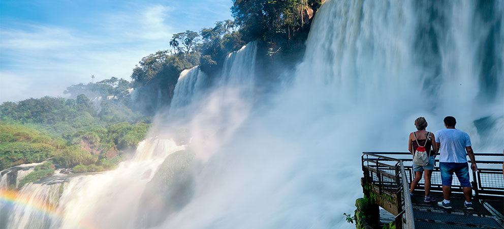
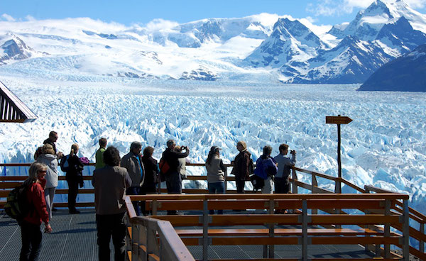
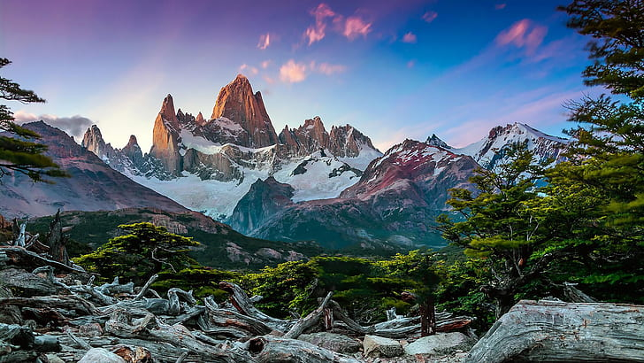

Cataratas del Iguazú

Es una de las más alucinantes experiencias que puede tener cualquier persona que decida visitar Argentina. Las cataratas de Iguazú te permiten contemplar el agua, escuchar el ruido que produce esta cascada y sentir el rocío que se adhiere a tu piel, se trata de una sensación que en ningún otro lado experimentarás.
Paisajes de Argentina, Cataratas del Iguazú
Las cataratas de Iguazú son llamadas popularmente en Argentina como “Cataratas” porque son varias, que se localizan sobre el rio Iguazú. Representa el límite entre el estado de Brasil de Paraná y la provincia de Misiones.
Bariloche

Dentro del país, Bariloche es uno de los lugares preferidos por los viajeros. Se trata de una región de la Patagonia Argentina.
Paisajes de Argentina, Bariloche
Es popularmente conocida por su arquitectura al más puro estilo de los Alpes suizos, así que si deseas visitar uno de los mejores paisajes de Argentina, este sin lugar a duda es uno de los principales.
Glaciar Perito Moreno

Justo a las espaldas de Purmamarca se encuentra uno de los más sorprendentes paisajes de Argentina, el cerro de los siete colores. Se trata del paisaje más fotografiado de todo el país. Recibe su nombre debido a la variedad de colores que son reflejados desde muy temprano. Ese complejo arcoíris natural es el resultado de una historia geológica, sus colores son:
Rosado.
Blanquecino.
Colores pardos, morados y marrones.
Rojo.
Verde.
Pardo terroso.
Amarillo mostaza.
Paisajes de Argentina, Cerro de los Siete Colores
Es recomendable madrugar para poder apreciar el esplendor del Cerro de los 7 colores con los primeros rayos del sol que son reflejados en las rocas que son multicolores.
Monte Fitz Roy

Este Monte Fitz Roy se encuentra ubicado en “El Chaltén” que quiere decir “montaña que humea”, casi en el límite de Argentina con Chile, en los Campos de Hielo Patagónico Sur, se encuentra este paisaje montañoso que desafía la escala de todo lo impresionante.
Paisajes de Argentina, Monte Fitz Roy
Este Monte Fitz Roy se asoma como cresta de rocas entre nubes coloridas y glaciares. Es una montaña con 3405 metros de altura, lo cual la ha convertido en una de las más difíciles de escalar.